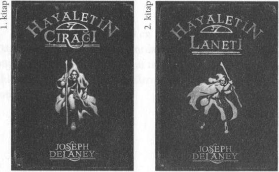

"Bir ne?" diye sordu Teus aniden.
"Bir kahraman," diye tekrarladı January.
"O zaman onu kurtarmak zorundayım," dedi Teus.
"Onu, Zeus'a göstermeliyim."
"Kime?" diye sordu İngiliz beyefendi.
"Benim... kuzenime," dedi Teus. Bana öyküsünün büyük kısmını anlatmıştı, ama diğer ikisine anlatarak zaman harcamak istemedi.
"Onu kurtaramazsın," diye itiraz etti January. "Kimse Aden Hapishanesi'nden kaçamaz."
Teus tabuttan kalktı. "Benim suçum," diye tekrarladı.
" O n u n yerine beni asmaları gerek."
"Ama o zaman SEN ölürsün," diye itiraz etti January.
"Bu ne işe yarar ki?"
"Ama ya yaşarsam?" diye sordu Teus.
Ben o n u n ne demeye çalıştığını biliyordum, ama İngiliz centilmen başını iki yana salladı:
"İmkânsız!"
"Hayır, değil," dedi January, ayağa fırlayarak. "Bunu daha önce de duydum. İlmeği kandırmanın bir yolu var gerçekten."
Kızın tabutun üzerine sıçramasını izledik. Boynuna ilmek geçirmiş gibi yaptı. "Halat, gırtlağını sıkıp seni boğuyor," dedi, "ama bazı kurbanların, boğazlarına sağlam melalden bir tüp soktuğunu duydum. Bu onları kurtarıyor.
Arkadaşları gömmek için bedenini alıyorlar, tüpü çıkarıyorlar ve sonra adamı uyandırıyorlar."
182
"Evet!" diye bağırdı İngiliz beyefendi. "Yüz sene önce bir İngiliz haydut yapmış sanırım. O n u n işine yaramış."
"O zaman, tek yapmamız gereken Bay Slaughter'a gizlice bir parça boru ulaştırmak," dedi January.
Başımı iki yana salladım. "İddiaya girerim haydut genç, zinde bir adamdı. Edward Amca yaşlı ve şişman. Ayaklarının altındaki kapak açıldığında düşüp ölür."
Teus başını salladı. "İşte bu yüzden, genç bir adam onun yerini almalı."
"Ben yapamam," diye içimi çektim. "Yapmak isterdim, ama işe yaramaz."
"İşte bu yüzden benim yapmam gerek," dedi Teus hevesle.
January Storm başını iki yana salladı. "Pardon, ama ben seni şişman yaşlı bir adam rolü oynarken düşünemiyorum."
"Ben düşünebiliyorum!" diye haykırdı Teus. "Hatırlasana, Mucklethrift Malikânesinde Edward Amca şöyle demişti, 'Korkunç, şişman yaşlı bir adam gibi görünmeni gerekiyor.' Ben de ona o n u n gerçekten korkunç, şişman ve yaşlı bir adam olduğunu söylemiştim. Ama o yüzüne o boyaları sürmüştü.
"Tiyatro makyajı," dedim.
"Evet... saçlarına da pudra dökmüştü. Eh, b u n u ben de yapabilirim," dedi Teus.
"Darağacına çıkıp Bay Slaughter'ı itip yerine geçemezsin," diye itiraz etti January.
183
" H a ! " diye bağırdı İngiliz beyefendi. "Ben yanıtı buldum. Kitap gibi bir plan. Teus'u, Bay Slaughter olarak giydireceğiz, sonra gidip hapishanede onu ziyaret edeceğiz.
Nöbetçilere Teus'un, amcanın ikiz kardeşi olduğunu söyleyeceğiz."
Başımı salladım. "Hücreye girdiğimizde Teus'u asılmak üzere orada bırakacağız, boğazına bir boru soktuktan sonra elbette ve gerçek Edward Amca'yı alıp çıkacağız."
"Kusursuz," dedi İngiliz beyefendi, "ve bu ayki öyküm için de m ü k e m m e l bir son olacak. Ö y k ü m ü n adı İ ki Kasabanın Hikâyesi."
"Teus'un darağacında söylev vermesi gerekecek," dedi January. "Hep öyle yaparlar."
"Ne diyeceğim?" diye sordu Teus endişeyle.
"Ah, ben senin için bir şeyler yazarım," diye öneride b u l u n d u İngiliz beyefendi. "Bu benim işim."
"Edward Amca'nın yedek giysilerini giy," dedim Teus'a ve amcamın, sahnenin yanında duran çantasını gösterdim.
Artık tamamen kendime gelmiştim ve kan beynimde kö-
püre köpüre akıyordu. Edward Amca beni yetimhaneden kurtarmıştı; şimdi karşılığını ödeyebilir, onu darağacından kurtarabilirdim.46
Makyaj kutusu, İskeletor'un parçalanmış kafatasının altında, güvendeydi. On dakika içinde Teus'u, Edward 46 Tuhaftır, Edward Amca'nın beni bir dehşetten -yetimhaneden- kurtarıp daha da kötü bir dehşete, idama sürüklediği hiç aklıma gelmedi. Bunun için onu hiç suçlamadım. Benim tek istediğim onu kurtarmaktı.
184
Amca'ya benzettik. En azından Aden Hapishanesi'nin loş
m u m ışığında ve sisli sabah aydınlığında o sanılabilirdi.
Edward Amca siyah ceketini giymişti. Yedek ceketi koyu yeşildi. "Aynı değiller," diye inledi January. "Nöbetçi farklı olduklarını görecek."
"Yo, y o ! " dedi beyefendi yazar, sırıtarak. "Böylesi daha iyi. Hücrede ceketleri değiştirirler. İçeri yeşil bir ceket girer, dışarı yeşil bir ceket çıkar. Nöbetçi yüzlerine bakmaz bile. Yalnızca cekete bakar."
"Elbette," diye onayladı January. "Amma da boş kafalıyım."
Bir anlığına, önceki alaycılığım geri döndü. "Evet. January zihin okuyan birine gitmiş, ama adam parasını geri vermiş," diye espri yaptım.
January bana döndü. "Sen köyüne dönsene. Köylüler köyün delisini özlemişler!"
"Şimdikinin iki katı akıllı olsan, ancak yarım akıllı olurdun."
"Beyin dediğin barut olsaydı, seninki şapkanı bile uçuramazdı."
"Bunun için zaman yok," diye bağırdı beyefendi yazar, aramıza girerek. "January, sen git ve bize Teus'un kullana bileceği bir parça boru bul."
January koşa koşa mutfağa gitti. İngiliz beyefendi başını iki yana salladı. "Bu gördüğüm en cesurca eylem olacak,"
dedi.
185
Teus omuzlarını silkti. "Hiç önemli değil," dedi ve göz göze geldik. Teus'un asıldıktan sonra ölmeyeceğini ikimiz de biliyorduk. Sonra bir şey hatırladım. Beyefendi yazar Teus'un darağacı söylevini yazmak için bir parça kâğıt bulmaya gittiğinde ona fısıldadım, "Teus... tanrısal güçlerini kullanıyor olacaksın."
"Biliyorum."
"Yeşil bir kıvılcım çıkaracaksın ve Gazap senin izini bulacak."
"Evet."
"Ve bu sefer bir daha dirilmemek üzere yok olacaksın.
Ufalanıp toza dönüşeceksin."
Başını salladı. "İşte bu yüzden beni tabuta koymalı ve hana geri getirmelisiniz. Kanatlarım da beni bekliyor olmalı. Şansım varsa Gazap izimi bulmadan ben uzaklaşmış
olurum."
"Ya şansın yoksa?"
Soruyu havada bıraktı. Tıpkı ilmeğin ucundaki bir adam gibi...
YİRMİ YEDİ
S T O R M HANI, IDAMDAN SONRA
Bunun için özür dilerim. Şimdi bölüm sıralamasında doğru yere geldik. Edward Amca yerine Teus asıldı. Sonra ancak bir Titan'ın yapabileceği şekilde dirildi. İdamdan hem Teus hem de Edward Amca sağ salim kurtulduğu için sevindiğimizi hatırlarsın. Ama sorunlarımız bitmemişti. Kaçabilmek için hızlı hareket etmemiz gerekirken biz, sahnede birbirimize sarılarak oyalanıyorduk. Halbuki, çok çok hızlı hareket etmemiz gerekiyordu.
J a n u a r y Storm'a sarılacağım hiç aklıma gelmezdi. "O
kadar kemiklisin ki iskelet İskeletor'a sarılmak gibi bir şey bu," dedim ona.
January bana daha sıkıl sarıldı. "Ben de aynı şeyi senin için d ü ş ü n ü y o r d u m , " dedi ve güldü. Gülerken o kadar da çirkin görünmüyordu.
Beyefendi yazar, sakalını sıvazladı ve sessizce konuştu:
"Henüz güvende değilsiniz, biliyorsunuz. Jim'in on tre nine binmesi gerek, yoksa onu aramaya gelirler ve Bay 187
Slaughter'ın hâlâ hayatta olduğunu görürlerse onu alıp götürür, yine asarlar."
January beni bıraktı ve başını kaldırıp Teus'a baktı. "Bo
ğazına soktuğun boru işe yaradı demek, hı?" diye sordu.
Teus, boruyu cebinden çıkardı ve ona gösterdi.
January kaşlarını çattı. "Boruyu ne zaman boğazından çıkardın?" diye sordu.
"Siz beni tabutun içinde buraya taşırken," diye yalan söyledi Teus.47
January başını salladı. "Ee, Bay Slaughter'ı nasıl şehirden çıkaracağız?"
"Tabutun içinde, sanırım," dedim.
January inledi. "Teus'u buraya zar zor taşıdım," dedi, sıska kollarını ovalayarak. "Bay Slaughter gibi şişman birin i . . . demek istediğim, Bay Slaughter gibi büyük birini taşıyabileceğimi sanmıyorum."
Edward Amca dimdik d u r d u ve karnını içine çekti.
"Dostlarıma bu kadar büyük bir yük olmaktan nefret ediyorum," dedi. "Genç Teus'a her şeyimi borçluyum. Hayatımı ve özgürlüğümü oğlum. Bununla birlikte, büyük bir al
çakgönüllülükle, bir iyilik daha rica ediyorum. Bu zavallı, 47 Evet. Boru numarasını kullanmadığını sen de biliyorsun, ben de. Teus onu öldürmelerine izin verdi, o kadar. Ama January bunu bilmiyordu. Ona öykünün tamamını anlatmak çok fazla zaman alırdı. Ama bizim zamanımız yoktu. Üstelik January; Titanlar, Tanrılar ve Gazaplar hakkında bir öyküye inanmayabilirdi de. Önemli olan tek şey, SENİN inanman.
188
annesiz çocukların beni istasyona taşımasına yardım eder misin?"
Teus bir an duraksadı.
"Yapamaz!" dedim. " O n u n gitmesi gerek. Hemen, şu anda gitmesi gerek. Çok geç olmadan."
"Ne için çok geç olmadan?" diye sordu January.
"Hiçbir şey..." diye mırıldandım.
"Hiçbir şey için çok geç olması, bir şey için çok erken olması demektir," dedi Edward Amca.
"Hı?" diyerek gözlerimi kırpıştırdım. "Bak amca, bana güven, Teus'un kaybedecek tek bir saniyesi bile yok. O n u n kendi sorunları var."
Teus, üzgün ve kararsız görünüyordu. Sonra zorla gülümsedi ve "Hayır, zamanım var. Sen endişelenme Jim," dedi.
"Endişelenme mi!" diye haykırdım. "Senin peşinde pis, k o c a m a n . . . "
"Gitmeden önce senin güvende olduğunu görmek istiyorum," dedi. "İtiraz etme. Ama m ü m k ü n olduğunca çabuk davranalım."
Başımı iki yana sallayarak pes ettim. Bir insan bir Titan'ı yenemez.
January ve İngiliz beyefendi meşguldü. Edward Amca'
nın tabuta girmesine yajrdım ettiler, sonra iskelet İskeletor'u yanına tıktılar. Amcamın ayaklarının dibindeki boşluğa makyaj kutusunu ve büyülü lambayı sığdırdılar. İngiliz beyefendi, piposunu temizlemek için yanında taşıdığı 189
k ü ç ü k bir kalem açma bıçağını kullanarak t a b u t u n kapağında bir delik açtı. January'nin borusunu, Teus'un hayatını kurtardığını sandığı boruyu, delikten geçirdik.
Edward Amca o boru sayesinde nefes alacaktı.
Teus tabutun bir ucunu, İngiliz beyefendi diğer u c u n u tuttu. Biz sokakta hızla ilerlerken insanlar yolumuzdan kaçışıyordu. Eh, sen olsan, sen de bir tabutun ö n ü n e çıkmak istemezsin, değil mi?
Şerif Şerif istasyonda beni bekliyordu.
Belediye binasındaki saat dokuzu vurdu. Trenimin yola çıkmasına bir saat vardı.
Polis m e m u r u bana ve Teus'a birer tren bileti verdi.
Teus'un da benimle birlikte kasabadan ayrılması gerektiğini u n u t m u ş t u m . Ama Teus, Gazap geldiğinde trende kısılı kalmak istemiyordu. O kanatlarını takıp uzaklaşmak istiyordu.
Tren gelmeden önce Şerifi gitmeye ikna etmemiz gerekiyordu. Zaman tıkır tıkır geçiyordu. Polis m e m u r u beklemek üzere perondaki banka oturdu.
Bektaşi ü z ü m ü gözleri tabut kapağındaki boruya takıldı.
"Yaşlı iskeleti yanınızda mı götürüyorsunuz? Amcan öldüğüne göre, artık oyun oynamaya devam etmeyi düşün-müyorsundur, değil mi?"
"Teus'la birlikte oynayabilirim," dedim.
"Ee, kapaktaki boru ne için?" diye sordu polis memuru.
"İskelet, temiz hava alabilsin diye," dedim.
190
"Nefes mi alıyor?"
"Hayır... ama kapalı bırakıldığı zaman küfleniyor. Çürük kemik gibi kokuyor," diye yalan söyledim.
Şerif Şerif başını salladı ve oturmaya devam etti.
January'nin kolunu yakalayıp bekleme odasının kapısına doğru çektim. "Polis m e m u r u n d a n kurtulmam gerek," dedim.
"Neden?"
"Teus trene binmemeli. Yardım edebilir misin?" diye yalvardım.
"Bir kızın aklı bir oğlanınkini yenebilir mi?" diye sordu.
"Hayır," dedim.
"Yanlış cevap, aptalcık," dedi. "Evet, bir kızın aklı bir oğlanınkini yenebilir. Yani, evet, yardım edebilirim. İzle beni.
Çabucak istasyon girişine koştu ve köşede kayboldu.
Bir dakika göz açıp kapayana kadar geçti. Sonra bir kıymetli, tehlikeli dakika daha... Ardından January koşarak, çığlıklar atarak istasyon girişinde belirdi. "Ah, Şerif Şerif!"
diye bağırdı. "Limanda korkunç bir kaza o l m u ş ! "
"Limanda mı?"
"Bay Mucklethrift'in gemilerinden biri rıhtıma çarpmış, ve su alıyormuş."
"Yaralanan olmuş m u ? "
"Yaralı yokmuş ama Bay Mucklethrift gemi batmadan önce y ü k ü n ü n boşaltılmasını istiyor. Yardım eden herkese altın verecekmiş."
191
Bektaşi ü z ü m ü gözler iri iri açılmıştı. "Bir k a n u n adamı olarak, bu tür felaketlerde yardım etmek benim görevimdir. Tek kuruş ödül vadetmese bile Bay Mucklethrift'e yardım ederdim."
"Eminim ederdiniz, ama oraya hemen giderseniz sürü sürü kuruş alırsınız. Zengin olursunuz. Bütün sokak dilencileri o yana gidiyor. Acele etmezseniz parayı onlar alacak," diye anlatmaya devam etti January.
Şerif Şerif bize baktı. "Benim gitmem gerek. Orada bir öndere ihtiyaçları var. Sorumluluk sahibi birine."
"O zaman git," dedi İngiliz beyefendi. "Ben bu suçluların trene bindiğinden emin olurum," diye öneride bulundu.
"Siz gerçek bir beyefendisiniz bayım," dedi polis memuru. Ödül almaya koşarken neredeyse copuna takılıp düşüyordu.
January gülümsedi. "İşte oldu. Limana gitmesi yarım saat sürer. Biraz soruşturup kaza falan olmadığını öğrenene kadar saat dokuz otuzu epey geçer."
Peron saati dokuzu beş geceyi tıkladı. "O buraya dönene kadar tren gitmiş olur ve Şerif Şerif trene kimlerin bindiğini öğrenemez," dedi January.
"Aferin, k ü ç ü k January," dedi Teus ve kız gururla böbürlendi. Teus ona hafifçe sarıldı ve önce İngiliz beyefendiyle sonra benimle el sıkıştı. "Bana yardım ettiğin için te
şekkürler Jim," dedi.
"Öff, git artık!" diye inledim. "Koş! Storm Hanı'ndan kanatlarını al ve u ç ! "
192
"Gerçekten uçabiliyor m u ? "
Teus yakışıklı başını salladı. "Şehirden ayrılmadan önce son bir ziyaret yapmalıyım, sonra gideceğim. Hoşça kalın ve iyi şanslar," dedi.
Sonra gitti. Titan'ı galiba son g ö r ü ş ü m d ü . 4 8
"Ama senin başın belaya girecek küçük hanım," dedi beyefendi yazar, January'ye. "Yaptığın şey yüzünden Şerif seni hapse atabilir."
"Atmaz," dedi January sırıtarak, "çünkü o buraya döndüğünde ben burada olmayacağım. Jim ve Edward Amca ile trende olacağım."
"Öyle mi?" dedim.
"Evet. Storm Hanı'nda köle gibi çalışmaktan bıktım. Üstelik, siz d ü n gece hanı harap ettiniz. Babam, benim eksikliğimi hissetmez bile. İkinizin de size bakacak bir kadına ihtiyacınız var."
"Şimdiye dek başımızın çaresine baktık," dedim.
January ellerini kalçalarına dayadı ve bana baktı. "Çaldığınız b ü t ü n ganimeti kaybettiniz," diye hatırlattı. "Doğru"
"Polis tarafından yakalandınız.
"Evet, ama..."
"Şehirden sürüldünüz."
"Biliyorum, ama..."
46 Ama olmadı. Göreceğin gibi. Bununla beraber, onu sonra ne zaman gördü-
ğümü anlatarak öyküyü mahvetmeyeceğim. Hatırlamalısın, bir yazarın işi seni merakta bırakmak, sayfaları çevirmeni sağlamaktır. Benden HİÇ Mİ bir şey öğrenmedin? Şimdi öyküye dön.
193
"Ve Edward Amca ölümden mucize eseri kurtuldu."
"Evet, şey..."
"Bir dahaki sefere o kadar şanslı olmayabilirsiniz," dedi.
"Ve bir kızın aklının bir oğlanınkini yenebileceğini biliyorsun aslında. Bu yüzden, yanınıza almak için bir kızdan daha iyisini bulabilir misiniz?"
"Biletin yok!" diye bağırdım.
"Teus'un kullanmayacağı bilet bende," dedi ve sırıtması İngiliz beyefendinin kalem bıçağından daha keskindi.
Ağzım açılıp kapandı, ama onu alt edecek sözler gelmedi bir türlü aklıma.
"Pes et Jim," diye öğütledi beyefendi yazar.
"Pes ediyorum," dedim.
January t o p u ğ u n u n üzerinde döndü. "Ben birkaç parça eşya almak için Storm Hanı'na dönüyorum. Tren kalkmadan dönerim," dedi ve koşarak uzaklaştı.
Saat tıkır tıkır işleyerek dokuzu on geçe oldu.
"Bayım? Siz Edward Amca'ya göz kulak olur m u s u n u z ? "
diye s o r d u m beyefendi yazara, tabuta doğru başımı sallayarak.
"Elbette. Neden?"
"Gitmeden önce birini görmem gerek."
Aden'e son bir yolculuk yapmak için istasyondan ayrıldım.
YİRMİ SEKİZ
O SABAH, ADEN'İN HER YERİNDE
Öyküm bir çığ gibi... Gittikçe hızlanıyor. Sahneler döne döne değişiyor. Karakterler tek adım atmadan girip çıkıyor.
Kartopunu gözden kaybetmemeye çalış. Fazla uzağa yuvar-lanamaz.
Kızıl şafak güneşi, Aden'in üzerine çöken sis ve pusun üzerine yükselmişti ve aydınlık, kirli bir sarıya dönmüştü.
Ama p u s u n üzerinde gökyüzü berraktı ve orada iki çift kanat görebiliyordun. Kanatlı varlıklar halkalar çiziyordu.
Biri b u l u t u n h e m e n üzerindeydi. Diğeri ise yüksekte, batmakta olan ayın h e m e n aşağısında.
Alçaktaki kanatlar, vahşi bir gagası ve zalim gözleri olan devasa, kahverengi bir kuşa aitti.
Diğerleri beyaz bir atın sırtından çıkıyordu. Bir tanrı, atın sırtında oturmuş, kahverengi k u ş u n Aden'in pis havasına dalmasını izliyordu. Beyaz at, bir akanyıldızdan da 195
hızla dalarak kuşu izledi. At, tıpkı... gökten düşen bir at kadar hızla alçaldı.49
Sokaklar kalabalıktı. Dilencilerin ö n ü n d e n , çöpçülerin yanından hızla geçtim. Kibritçi kız, bir kapının ö n ü n e büzülmüştü. Solgun görünüyordu ve kibritlerim var, diye bağıramayacak kadar zayıf düşmüştü.
Edward Amca'nın verdiği para, kızın cüzdanındaydı; ama o n u n artık paradan daha fazlasına ihtiyacı vardı: O n u n bakıma ve sevgiye ihtiyacı vardı.
Hapishanenin köşesini d ö n d ü m ve aniden öyle d u r d u m ki ayaklarım çamurlu sokakta kaydı. Gerileyerek köşeyi dolandım yine, sonra korku içinde ileriyi gözledim.
Polis memurları kahvaltılarını bitirip dönmüşlerdi.
Darağacını sökme işine ara vermiş, bir yabancıyla konu
şuyorlardı. Yabancı tepeden tırnağa kahverengi bir pelerine sarınmış görünüyordu. Tüylü bir pelerine... Yüzü bir şa-hininki kadar sertti ve b u r n u bir gaga kadar sarıydı.
"Bu sabah burada bir adamın öldüğünü mü söylüyorsunuz?" diye soruyordu.
"Evet," dedi Memur Drab, "Slaughter adlı şişman, yaşlı bir a d a m . . . "
49 Sık sık, gökten düşen at görmediğini biliyorum. Aslında, bir milyon sene de yaşasan, gökten düşen tek at göremezsin. Ama hayal edebiliyorsun, değil mi? Edemiyor musun? Ben de kendi gözlerimle görmedim. Ama ben hayal edebiliyorum, sen neden edemiyorsun?
196
Yabancı başını iki yana salladı. Boynu kırılmış ve doğru düzgün iyileşmemiş gibi davranıyordu. "Aradığım adam o değil. Şişman, yaşlı bir adam olduğundan emin misiniz?"
"Ah, evet bayım. Tam buracıkta işinin bitmesini izledik," diye ısrar etti Memur Dross.
Yabancı ayağını yere vurdu. Ayak yerine pençeleri olduğuna yemin edebilirdim; ama tüylü bacak örtüleri ayaklarını yarı gizliyordu. "Belki kılık değiştirmiştir," diye homurdandı.
Memur Dross, Memur Drab'e baktı. "İpini kesip adamı yere indirdiğinde y ü z ü n ü n boyalı g ö r ü n d ü ğ ü n ü söylemiştin M e m u r Drab."
"Söyledim," diye onayladı Memur Drab. "Elime de bulaştı! İşte, bak!"
"Öğğk!" diye bağırdı Memur Dross. "Yani o ellerle mi kahvaltı servisi yaptın bana? İlk önce ellerini yıkamadın mı?"
"Daha önce b u n d a n hiç rahatsız olmamıştın," dedi Mem u r Drab ona.
"Memur beyler," diye gakladı yabancı. "Söyleyin bana.
Cesedi ne yaptılar?"
M e m u r Drab ve Memur Dross, "Storm Hanı'na götür-düler," dedi.
"Peki, bu hanı nerede bulabilirim?"
"Irmak kıyısında..." dedi Memur Drab, adama ve oraya nasıl gideceğini anlatmaya başladı. Ben d ö n ü p kaçtım Aden'i çok iyi bilmiyordum; ama yan sokakları ve ara 197
geçitleri kullanarak hana gidebilecek kadar biliyordum.
Belki oraya Gazap'tan önce ulaşabilirdim. Çünkü o iğrenç yaratığın kim olduğuna dair en ufak şüphem yoktu.
Belki Gazap'ın yolda olduğu k o n u s u n d a Teus'u uyara-bilirdim.
Ama Teus'un kanatlarını alıp çoktan gittiğini bilmiyord u m . . .
Teus, bir k o l u n u n altına kanatlarını, diğer k o l u n u n altına da Eski Yunan gömleğini sıkıştırmıştı. Gazap'ın yakınlarda olup olmadığını görmek için gökleri taradı. Kaçmaya hazırdı. Kuşun doğrudan Teus'un öldüğü yere gideceğini bilmiyordu. Teus'un şu anda olduğu yere ancak Zeus doğrudan gidebilirdi.50
Titan, 'Kahraman Tapınağı' tabelası bulunan ara soka
ğın köşesine geldi. D o n u k sabah ışığında, önceki geceden daha iyi görebiliyordu. Tapınak küçük, k ö h n e bir binaydı, ihmal edilmiş, yıkılmaya yüz tutmuştu. Bir Yunan tapınağına benzeyecek şekilde inşa edilmişti; ama ahşaptan yapılmıştı.
Teus'un gözüne tapınağın kenarında duran at takıldı.
Aden'de bir sürü at vardı. Ama Aden'deki kanatlı tek at buydu. "Pegasus!" dedi Teus gülerek. "Senin burada ne işin var oğlum?" diye sordu ve eski d o s t u n u n b u r n u n u okşadı.
50 Elbette Zeus, Teus'un izini parmağındaki yüzüğü kullanarak sürüyordu.
Bunu önceki bölümlerden birinde sana söylemiştim. Dikkat et. İşlerin fena halde karışacağına dair uyardım seni.
198
Tapınağın kapısı gıcırdayarak açıldı ve paslı menteşelerin üzerinde çarpık çarpık asılı kaldı. Yaşlı bir kadın dışarı çıktı. Kadın, solgun bir şala sarınmıştı ve ölü çiçekler taşıyordu. Gözleri, Aden'in su birikintilerinden birazcık daha parlaktı. Başını kaldırıp Teus'a baktı. "Kahraman döndü," dedi. "Bütün hayatım boyunca kahramanın eve dönmesini bekledim. Artık o döndü. T ü m diğer tapınan-lara söylemeliyim."
" D u r ! " dedi Teus. "Bu kahraman kim?"
Kadın sabırsızlandı. "İki yüz yıl önce Aden'e geldi. O
öldü, ama şehri kurtardı. O n u anmak için tapınağı kurduk. Ona teşekkür etmek için."
"Kurban vererek mi?" diye sordu Teus.
Kadın b u r u k bir gülümseme ile sarı dişlerini gösterdi.
"Aptallaşma, çiçekler ve ilahilerle." Haberi yaymak için ara sokaktan ana caddeye doğru seyirtti. Bir yandan da bir ilahi söylüyordu.
"Teşekkür ederiz ey en yüce.
Seni asla unutmayacağız.
Bir gün geri dön ve görün bize,
Sana kucak açacağız..."
Ve kalabalık caddenin köşesinde gözden kayboldu.
Teus tapınağın kapısından içeri girdi. İçerisi, bir ucunda masa olan basit bir odaydı. Masada taze çiçekler vardı.
199
Yaşlı kadının bu sabah getirdiği çiçekler. Duvarlara, Yunan tanrılarına benzeyen taş heykeller dizilmişti. Ama odanın ortasındaki tahtta, canlı bir tanesi oturuyordu. "İçeri gel kuzen Teus. Fazla zamanın yok," dedi.
"Selam Zeus!" dedi Teus gülümseyerek.
Storm Hanı'na koştum ve January'yi elinde bir masa örtüsü ile gördüm. Birkaç parça giysiyi ve ayakkabıları bohçalıyordu. "Jim? Burada ne işin var?" diye sordu.
"Teus'u arıyorum," dedim. "Onu uyarmak istedim. Düşmanı şehre gelmiş."
January kaşlarını çattı. "Ben geldiğimde çıkmak üzereydi. Kanatlarını aldı ve hızla uzaklaştı. Sanırım, bu düşman meselesini biliyordu."
"Tahmin etmiş olmalı," dedim. "Uçarak mı gitti?"
January bana delirmişim gibi baktı. "Uçmak mı? Teus uçamaz. Kimse uçamaz."
"Elbette hayır," dedim çabucak. "Nereye gitti?"
"Kahraman Tapınağı hakkında bir şeyler söyledi."
"Bunun için zamanı yok," diye inledim. "Ben gidip onu uyarsam iyi olacak," dedim, d ö n ü p kapıdan dışarı koşarken. "Yarım saat sonra istasyonda görüşürüz."
Çarpan kapılardan çıktım ve sağa d ö n d ü m . Sol taraftan yaklaşan şahin yüzlü yabancıyı görmemiştim. Gazap, hızla bize yaklaşıyordu.
200
Yaratık, Storm Hanı'na döndü ve gözlerini January'ye dikti.51
"Günaydın bayım. Özür dilerim, ama daha açmadık,"
dedi yaratığa.
"Kapı açık," dedi Gazap.
"Kapı kırıldı. Mobilyaların çoğu da öyle," dedi January.
" D ü n gece burada kavga çıktı."
"Ah," diye başını salladı gagalı kafa, çarpık çarpık. "Ve genç bir adam öldürüldü, değil mi?"
"Hayır... Koca Bill öldürüldü ama bu önceki gece oldu.
Kafatası inceymiş. Yazık oldu, aslında..."
"Ama bu yolun sonunda şafak vakti biri ölmüş. Hapishane dediğiniz yerde, değil mi?"
January başını salladı "Yaşlı bir hırsız." Yabancıya gü-
venmemişti ve ona gerçeği söylemeyecekti. "Hırsızın kü
çük oğlu, benim arkadaşım."
"Peki, bu küçük oğul şimdi nerede?" diye sordu yabancı.
"Kahraman Tapınağı'na gitti."
"Ahhh! Belki hapishanedeki bu ölümü bilip bilmediğini ona sormalıyım, değil mi?" dedi yaratık ve gitmek üzere döndü. O sırada oradan ayrılsa, beni tapınakta yakalardı ve Teus'u bulurdu. O n u tek bir şey durdurabilirdi....
51 Öykünün bu kısmı konusunda January'ye inanmak zorundayım. Sanırım doğruyu söylüyordu, çünkü tesadüf eseri, Gazap'ı oyalamak ve Teus'a bir şans tanımak için evrendeki tek yolu bulmuştu. Bu "tek yol" neydi? Ah, hadi ama! Yazar olmadığını biliyorum, ama tahmin etmiş olmalısın. Edemedin mi? O zaman okumaya devam etmek zorundasın.
201
January örtüyü düğümledi ve bohçayı okşadı. Belediye binasındaki saat dokuz buçuğu vurdu. "Gitmeden önce bir şeyler yemeye yetecek kadar zamanım var," dedi.
"Ah," diye içini çekti Gazap, kapılara uzanırken. "İki g ü n d ü r yemek yemedim. Her zamanki yemek kaynağım kaçtı..."
"İki gün mü? Açlıktan ölüyor olmalısınız. Benim yemeğimi paylaşabilirsiniz. Mutfakta koca bir tencere dolusu yahnim var. Babam bu gece müşteri ağırlayamayacak.
Yahni bozulup çöpe gidecek."
"Hayır, teşekkür ederim," dedi Gazap. "Bu tapınağa gitm e m gerek." Kapıları açmak üzere tüylü kolunu uzattı.
"Tamam madem," dedi January, neşeyle. "Ama yazık olacak. En sevdiğim yahnidir." Canavar kuş henüz uzaklaşmadan, Teus'u kurtarabilecek büyülü sözcüğü söyledi:
"Karaciğer yahnisi."
Gazap durdu. Zalim gagasından salya akıyordu. İçini çekti. "Ahhhh! Ne dedin sen? Bu d u r u m d a biraz alırım kü
çük hanım."
"Bir çanak mı istersiniz?"
"Yok, sen bana tencereyi getir!"
İşte, ben Kahraman Tapınağı'ndayken Gazap, kıymetli on dakikasını bu şekilde boşa harcadı.
YİRMİ DOKUZ
Seni bilmem, ama ben bir ara vermek istiyorum. O sabahki olayları hatırladığımda yüreğim güm güm atıyor. O sırada yüreğim o kadar hızlı atmıyordu çünkü o sırada felakete ne kadar yaklaştığımızı bilmiyordum. Bir düşün, 'karaciğer'
gibi küçücük bir sözcük her şeyi değiştirdi!
B u n u daha önce de yapmıştım. Gölgelerde d u r u p Titan Prometeus'un, Tanrı Zeus ile konuşmasını izlemiştim. İlk görüşmeleri, Bay Mucklethrift'in kütüphanesinde olmuştu. O sırada şehir, titreyerek sessiz kalmıştı. Şimdi, bir solucan deliğini izleyerek solucanın kıpırdanmasını duymaya çalışan karatavuk gibi dinliyordu.
Tıpkı önceki seferde olduğu gibi, Zeus ve Teus benim orada olduğumu biliyor, ama aldırmıyor gibiydiler.
"Kahraman Tapınağı'nı bulmuşsun," dedi Teus. "Demek ki bir insan kahraman var. Artık tanrılar beni affedebilir mi?"
203
"Hayır Teus. Ç ü n k ü bu kahramanın bir tapınağının olması, o n u n gerçekten bir kahraman olduğu anlamına gelmez. O n u bulup bana göstermelisin."
Teus başını salladı. "İki yüz yıl, hatta daha fazla geriye gitmeliyim."
Zeus tahtta öne eğildi. "Bu akıllıca bir yolculuk olabilir.
Seni affedebilirim. Ama Gazap'a verdiğim emri geri alamam. İntikamcı seni evrenin sonuna dek takip edecektir."
"O zaman bir kahraman b u l m a m ne işe yarayacak?"
diye haykırdı Teus.
"Kuzen," dedi tanrı. "Ben sana yardım edemem. Ama insanlara yardım edebilirim."
Teus öne atıldı: "Dünyayı bu pis havadan kurtarabilir misin? Onların d u m a n ve sis içinde yaşamasına bir son verebilir misin?"
"Hayır!" diye gürledi Zeus. "BU senin hatan. BU oldu, ç ü n k ü SEN onlara ateş verdin. İnsanlar, ateşi bilgece kullanmak konusunda, derslerini kendi kendilerine almak zorunda."
"Onlara ben öğretebilirim," dedi Teus.
"Gazap'tan kaçarken öğretemezsin," dedi Zeus ve arkasına yaslandı. "Ben geleceğe gittim Teus, b u n d a n yüz elli sene sonrasına. Bu duman, dünyayı fazla sıcak yapacak. Buzlu zirveler erimeye başlayacak, denizler yükselip karaları 204
kaplayacak. Çöller yayılıp tarlaları yutacak. İşte O ZAMAN
insanlar derslerini alacak. Bilgelik, hata yaparak öğrenilir.
Vaizleri ve öğretmenleri dinleyerek değil."
"Derslerini aldıklarında çok mu geç olacak?"
Zeus omuzlarını silkti. "Gelecekte daha ileriye gitmedim Teus. Hayır, ateş kullanırkenki deliliklerini durdura-mam. Ama sen cesurca davrandın. Gerçek bir Yunan kahramanı gibi. Yerini Gazap'a bildirecek yeşil kıvılcımı çıkarma pahasına, yaşlı adam uğruna kendi canını verdin."
"O burada mı?" diye sordu Teus ve ilk defa o n u n titrediğini gördüm.
"Yakınlarda," diye uyardı Zeus. "Bu insanlara o kadar sevgi gösterdin ki onlar için bir şeyler yapacağım. Senin ödülün bu olacak. Pandora'nın dehşetlerinin bir kısmını bu zalim şehirden alacağım. Burayı daha yaşanır bir yer kılacağım."
"Bunu nasıl yapacaksın?" diye sordu Teus.
"Bir şeyler d ü ş ü n ü r ü m Teus. Sen o işi bana bırak. Bugünlerde yaşayan insanlar bizi, büyük Yunan tanrılarını, u n u t m u ş . Ama güçlerimiz hâlâ yerinde. Biz dünya kadar yaşlı, dünyadan iki kat yorgunuz. Ama belki günbatımının ötesine yelken açmadan önce yapabileceğimiz küçük şeyler vardır hâlâ. Son bir asil eylem. Ben bir şeyler düşün ü r ü m . "
205
Tanrısal kulakları, benim insan kulaklarımın kaçırdığı k ü ç ü k bir ses duydu. Ya da belki tanrısal burnu, kokusunu almıştır. Çabucak ayağa kalktı ve Teus'u tapınağın kapısına doğru itti. "Uçma zamanın geldi."
Pegasus, alçak sesle kişneyerek uyardı. Kapının dışında, avluda duruyordu. Hepimiz dışarıya baktık. Ara yolun uzak ucunda, gagalı ve tüylü şeytan duruyor, çevresine bakıyor, havayı koklayarak avının kokusunu arıyordu.
Teus kuğu kanatlarını omuzlayıp kapıya koştu. Sıçradı ve kanatlarını çırparak havalandı. Gazap onu gördü ve koşmaya başladı; ama yüksek evlerin arasındaki yol, kanatlarını açmasına izin vermeyecek ölçüde dardı ve kaygan çamur koşmasını engelliyordu.
Gazap'ı durduramazdım. Ama onu yavaşlatabilirdim.
Pegasus'a koştum ve amcamın tabutuna attığım tekmeden daha şiddetli bir tekme attım. Ürken at çığlık attı ve kanatlarını açtı. Tam, Gazap avluya ulaşıp kanatlarını çırpmaya başladığında at da havaya sıçradı. İkisi çatıların üzerinde çarpıştılar. Kanatları birbirine dolandı ve yuvarlana yuvarlana çamurlu sokağa düştüler.
Gazap şanssızdı, at o n u n üzerine düşmüştü. Pegasus yaratığın üzerinden yuvarlanıp doğruldu, silkelendi. Ama Gazap inleyerek yattığı yerde kaldı. "Boynumu kırdın yine,"
diye tısladı.
206
Başımı kaldırıp boş bulutlara baktım ve bağırdım: "İyi şanslar Teus... Teşekkürler!"
Zeus kahkaha attı. Gazap'ın kurbanı o n u n pençelerinden kaçtığında Aden rahat bir nefes aldı.
Belediye binasındaki saat, ona çeyrek kaldığını haber verdi ve treni yakalamak için koşmam gerektiğini anladım.
Beni ve Edward Amca'yı yeni bir geleceğe taşıyacak olan treni...
Karışık sokaklarda koştum. Ölmekte olan kibritçi kızın ö n ü n d e n geçtim ve kestirme yol olduğunu sandığım bir sokağa saptım. Sokak yüksek bir çitle sona erdi. Çıkmaza girmiştim.
Hızla geri d ö n d ü m , çamurlarda kaya kaya hapishanenin ö n ü n d e n geçtim. Yolumu kaybetmiştim. Çılgınca çevreme bakındım. Sağa d ö n d ü m . Gösterdiğim çabayla ciğerlerim yanıyordu. Yine sağa d ö n d ü m . Neredeyse kibritçi kızın bacaklarına takılıp düşecektim. Daha önce geçtiğim yere d ö n m ü ş t ü m .
Bu vahşi şehir benimle, bir kedinin fareyle oynadığı gibi oynuyordu yine. Gölgelerden gelen kıkırdamalar şimdi daha yüksekti. Daha çok kahkahalara ve sevinç çığlıkları na benziyordu. Ama d u r u p dinlediğimde, örümcek ağının üzerinde yürüyen sineğin ayak sesleri kadar yumuşak bir sessizlik çöküyordu.
207
İşte b u ! Bu artık bir kedi-fare oyunu değildi. Ben, Aden'
in örümcek ağına benzeyen sokaklarına takılıp kalmış bir sinektim. Ne kadar çok çabalarsam o kadar fena dolanacaktım. Kâbus gibiydi. Birinin ceketimi çekiştirdiğini hissettim. Kibritçi kız bana bakıyordu. Derisi kâğıt kadar beyaz ve kırılgandı.
"Sola dön, sonra sağa, sola, sonra yine sağa," dedi fısıltıyla.
"Teşekkürler," dedim ağlayarak. Ama o duymadı. Çökerek, köşedeki dükkânın tahta duvarına yaslandı.
"Teşekkürler," dedim yine ve o n u n gösterdiği yolda koştum.
Saat onu vurmaya başladı. Yolun karşısında istasyon girişini gördüm. " H a d i ! " diye sesleniyordu Aden. "Hadi!
Gerçekten çabalarsan başarabilirsin!"
Ama bu, beni bitiş çizgisine koşmaya kışkırtan bir hileydi yalnızca. Tahta kaldırımdan sıçradım. Bir arabaya koşulmuş at, bana sürtündü ve beni kanala devirdi. Kanal, tekerleklerin altında ezilmekten kurtardı beni.
Gölgeler kıkırdadı.
Tik! diye tıkladı zaman. Dong! diye çalmaya başladı saat.
Kavşağı süpüren adam ayağa kalkmama yardım etti. Yolun karşısına koşturdum. Teşekkür edemeyecek kadar nefes nefese kalmıştım.
208
Ben peronda koşarken January, buharlar saçan lokomotifin yanında bekliyordu. Hamallar, tabutumuzu en öndeki vagona yerleştirdi. Bu kasvetli yerden uzaklaşır uzaklaşmaz Edward Amca özgür olacaktı.
Tren hareket etmeye başlarken bindik.
"Teus kaçtı," dedim nefes nefese. "Güvenliğe kavuşacaktır." Gözlerimi kapattım ve ter damlalarımın gözlerime kaçtığını hissettim.
Sonra kaba bir mendilin terimi sildiğini hissettim. Gözlerimi açtığımda, January bana gülümsüyordu. Gülümsediğinde o kadar çirkin olmuyordu.
Aden'in gölgeleri içlerini çekti. Yenildiklerini biliyorlardı.
January beni öptü. Dudaklarında hafif bir karaciğer tadı vardı.
"Hepimiz güvende olacağız," dedi gülümseyerek.
SON SÖZ
A D E N - 1 8 6 3
Bu öyküyü, olaylardan seneler sonra yazdığımı anlamış-
sındır. Bazen o hayret verici 1858 senesi düşler içinde bir düşe benziyor. Ama tarih kitaplarına bakarsan Aden'in o sene değişmeye başladığını görebilirsin. Ben oradan ayrıldığımda, Pandora'nın lanetinden kaynaklanan her tür sefalet vardı orada. Geri döndüğümde yeni bir Olimpos bulmadım. Ama tanrılar dokunmuştu oraya. Prometeus'la geçirdiğim iki günün rüya olmadığını bu şekilde anladım. Bu durumda seni geriye, yalnızca beş sene sonrasına götüreyim...
J a n u a r y ve ben trenden indik ve Aden İstasyonu'nda çevremize bakındık. "Yanlış durakta inmişiz," dedi Jan.
Beş sene önce geride bıraktığımız Aden'den çok farklı görünüyordu. Peronların çevresinde koşturan insanlar çok neşeli görünüyordu! Artık gölgeler r u h u n u z u çekiştirmiyor, kıkırdamıyordu. Artık gülümsüyorlardı sanki.
Edward Amca arkamızdan indi. Biraz daha şişmanlamıştı ve saçlarını kahverengiye boyamıştı. Ne de olsa, 210
Edward Amca, beş sene önce orada asılmış olmalıydı. Artık ona Edwin Amca diyorduk: Ölen Edward'ın ikiz kardeşi.
Jan, yani January, yaşam tarzımızı değiştirmişti. Bize çok iyi oyuncular olduğumuzu, sırf gösteri yaparak geçinebileceğimizi söylemişti. Zenginleri soymamız ve ziyaret ettiğimiz her kasabada asılma riskine girmemiz gerekmiyordu.
Jan'in de rol yapma yeteneği olduğu anlaşılmıştı. Gösterimize, o n u n da rol alabileceği yeni öyküler ekledik. İngiliz beyefendinin öykülerinden bazılarını ö d ü n ç aldık. Jan'in
'Küçük Belle'in Ölümü' oyunu yetişkin adamları bile ağlatıyordu.52
Her yere davet ediliyorduk ve güzel güzel yaşamamıza yetecek kadar para kazanıyorduk.
Elbette, geri d ö n d ü ğ ü m ü z d e January ve ben büyümüştük. Benim Aden'e girme yasağım sona ermişti, ama polis m e m u r l a r ı n ı n trenden inen u z u n boylu, yapılı genç adamın küçük hırsız Jim olduğunu anlayacağından kuşkuluydum.
Jan'in babası da yanımda duran, pamuklu elbise giymiş
kızıl saçlı kızı tanımazdı herhalde.
"Aden'e benziyor," dedim. "Ama... çok değişmiş."
52 Elbette, iskelet İskeletor'la "Amca" oyununu oynamayı hâlâ seviyordum.
"Yanan Güvertede Duran Oğlan Çocuğu" oyunundan sonra seyirciler ayakta alkışlıyordu. January iyiydi, ama benim kadar iyi değildi. Pardon... bunu okudu ve hayal gördüğümü söyledi. Sefil hayatlarımızda benim ve Edward Amca'nın başına gelen en iyi şeymiş o. Bunu asla itiraf etmeyeceğim. Aynı fikirde olabilirim; ama asla itiraf etmeyeceğim.
211
Pembe yanaklı, sarı saçlı bir kız, bir kucak dolusu çiçekle bize yanaştı. "Aden'e hoş geldiniz," dedi. January'
ye bir tutam çiçek verdi ve gülümsedi. "Ziyaretinizin tadını çıkarın."
Jan başını iki yana salladı. "Teşekkür ederim. Yaptığın iş bu mu? Yolculara çiçek mi dağıtıyorsun?"
Kız neşeyle gülümsedi. "Evet, harika bir iş. Beş sene önce sokaklarda yaşıyor, kibrit satıyor ve yavaş yavaş ölüyordum."
"Seni hatırlıyorum," dedim sessizce. "Ne oldu?"
"iyi k o m ş u m u z Bay Mucklethrift, beni sokaklardan kurtardı ve doktorları beni iyileştirdi."
'Eddie' Amca başını iki yana salladı. "Ama neden?" diye sordu. " O , gördüğüm en kötü, en zalim adamdı."
"Öyleydi," diye onayladı kız. "Sonra bir düş görmüş, öyle diyorlar; bir ruh onu ziyaret etmiş ve bu hayatını değiştirmiş. Hepimizin hayatını değiştirdi. Artık fabrikadan kazandığı paranın tamamını Aden'i düzeltmek üzere bağışlıyor. Şehir hâlâ dumanlı, bilirsiniz," dedi. "Ama Bay Mucklethrift sayesinde, insanlar mutlu."
O zaman Zeus'un sözünü tuttuğunu anladım. Cesurca eylemi için Teus'u ödüllendireceğini söylemişti. Pandora'
nın dehşetlerinin bir kısmını kaldıracağını, şehri daha ya
şanır bir yer kılacağını söylemişti. Zeus sözünü tutmuştu.
Ne yapmıştı acaba? O gün, daha sonra, Mucklethrift Malikânesi'ne gittik. Aden sokakları temizdi. Polis memurları 212
Drab ile Dross insanlara yardım ederek görev yapıyordu.
"Aden'de fazla suç işlenmiyor," dedi Dross, gülümseyerek.
"Buradaki son büyük dava, şehrin vergilerini çaldığı için belediye başkanının hapse atılmasıyla sonuçlanan davaydı."
"Dünyadaki tüm açgözlülüğü yok edemezsin herhalde,"
dedi Eddie Amca.
Polis m e m u r u onayladı. "Ama Aden halkının, geçinmelerine yetecek kadar parası var. Hırsızlık yapmaları gerekmiyor. Fabrikadaki insanlar iyi ücret alıyor ve Bay Mucklethrift, şehrin yetim bebekleri için özel bir yuva inşa ettirdi. Bebek çiftliği kapandı. Bay Mucklethrift, fakirlerin ve sokak dilencilerinin bile Storm Hanı'nda bakılmasını sağlıyor."
"Storm Hanı mı?" dedi January. "Fakirlere bakmak için tuhaf bir yer!"
"Hayır! Artık orası muhtaçlar için bir bakımevi," diye açıkladı polis m e m u r u . "Bay Storm çok güzel yemekler sunuyor."
"Öyle mi?" diye inledi Jan. "Yemek pişirme dersleri almış olmalı."
"Yemekler o kadar iyi ki zenginler bile o n u n yahnisinin tadına bakmaya gidiyor. O n u n özel yemeğinden tatmak için kilometrelerce yol geliyorlar."
"Karaciğer mi?" diye sordum.
"Nasıl tahmin ettin?"
"İçime doğdu," dedim.
"Ziyaretinizin keyfini çıkarın," dedi Dross. Sokakta yürümeye başladığımızda arkamızdan seslendi, "Ah.... kardeşiniz Bay Slaughter'ın başına gelenler için üzgünüm," dedi.
"Biz b u n u aştık," dedi Eddie Amca gülümseyerek.
Mucklethrift fabrikasının kapılarında işçiler gezine gezine dışarı çıkıyor, sohbet ediyor, kahve molalarının tadını çıkarıyordu. Kapıya bir ilan asılmıştı:
"Özür dileriz, on iki yaşından küçük çocuk çalıştırmıyoruz." Bacalar hâlâ ölü havaya mor ve sarı dumanlar saçıyordu. Ama Zeus, insanların ateşi delice kullanmasını engelleyemeyeceğini söylemişti. Temiz sokaklar ve parlak renklere boyalı dükkânlar, pus yüzünden zayıf güz güneşini pek az görebiliyordu. Yine de Aden, geride bıraktığımız yerden çok daha iyiydi. Yalnızca harap Kahraman Tapınağı, önceki gibi ihmal edilmiş görünüyordu.
Mucklethrift Malikânesi'nin ön kapısı açıktı ve gülümseyen bir kâhya, habercileri, iş adamlarını ve ziyaretçileri karşılıyordu:
"Elbette, Bay Mucklethrift sizi görmekten m e m n u n olacaktır. Beş sene önce, kardeşinizin yaptığı gösteriyi hâlâ anlatır Bay Slaughter. Gösterinin h e m e n ertesi günü bir r u h tarafından ziyaret edildi, biliyor m u y d u n u z ? "
"Ah ve bu ziyaret onu değiştirdi, değil mi?"
"Kesinlikle. Ölen kardeşiniz Aden'i sonsuza dek de
ğiştirdi."
214
"Öyle mi?" Eddie Amca gözlerini kırpıştırdı.
"Kütüphaneye buyurun. Bay Mucklethrift sizi gördü
ğüne m e m n u n olacak."
Yaşlı adam, gerçekten de bizi gördüğüne m e m n u n oldu.
Bizimle sıcak bir biçimde el sıkıştı ve bizi k ü t ü p h a n e masasının başına oturttu. Beş u z u n sene önce, Zeus ile Teus'
un karşılaştığı yerde. Öyküsü tuhaftı. Neler olduğunu yalnızca Jan ve ben tam olarak anlayabildik.
"Kardeşinizi astık," dedi Bay Mucklethrift. "Belediye Başkanı Tweed ısrar etmişti. Ama ben b u n d a n hiç memn u n olmamıştım. Ve o gece uykuya daldığımda beni ziyarete geldi."
"Belediye başkanı sizi yatağınızda mı ziyaret etti?" diye bağırdı Eddie Amca.
"Yo! Yo! Hayır. Ölen kardeşinizin ruhu ziyaret etti beni.
Belediye binasındaki saat biri vururken uyandım ve onu yatağımın ayak u c u n d a gördüm. Korktum."
"Ben olsam, ben de korkardım," diye onayladı January.
"Bana fazla açgözlü olduğumu, başka insanları umursamadığımı söyledi. Sonra eski büyülü lambasını kurdu ve bana bazı resimler gösterdi. Ama resimler hareket eden, konuşan resimlerdi, her zamanki büyülü lambanız gibi değildi."53
53 Hareket eden ve konuşan resimler imkânsızdır elbette. Bay Mucklethrift bunun, Eddie Amca'nın ruhu olmadığını tahmin etmeliydi. Belki o kadar çok korkmuştu ki gördüğü her şeye inanmıştı. Ama sen korkmuyorsun.
SEN onun Eddie Amca'nın biçimine bürünmüş olan Zeus olduğunu biliyorsun.
215
"Peki, ne gördünüz?" diye sordu Eddie Amca.
"Ah, Aden'in dehşetlerini.... Bebek çiftliğindeki acıları, dilencileri... En kötüsü de kanalda ölmekte olan bir kibritçi kızı."
" K o r k u n ç ! " diye onayladı Eddie Amca.
"Sonra bana kendi geleceğimi gösterdi. Yeraltı denen bir yere dair hareketli resimler gösterdi. Dokuz kafalı bir köpek vardı. Beni Yeraltı'na alıyordu ama çıkmaya çalıştığımda beni parça parça ediyordu."
"Cerberus," dedi Eddie Amca. Eski masallar hakkında çok şey bilirdi.
"Yeraltı'ndaki işkenceler tekrarlanmayacak kadar korkunç," dedi Bay Mucklethrift. "Kardeşinizin hayaletine, o n u n yalnızca bir kâbus olduğunu söylemeye çalıştım. Ama kapıyı açtı ve gördüğüm en korkunç yaratık içeri girdi! Üç başı vardı; birbirleriyle didişen başlar, ama birlikte çalıştıklarında beni kavurup küle dönüştürecek kadar çok ateş
püskürtebiliyorlardı!"
Zeus saraydaki evcil hayvanını, Kaymera'yı, Aden'e getirmişti. O, herkesi ölümüne korkutacak bir canavardı.
Bay Mucklethrift'in gözleri irileşti. "Aslan kafa, keçi kafaya kükreyip duruyordu. Gerçekten korkunçtu. Sonra Bay Slaughter'ın ruhu 'Pandora'nın etkisinden kurtulmak'
hakkında bir şey söyledi. Sizce ne anlama geliyordu?"
"Aden'deki acıları silmek için elinizden geleni yapmanız gerektiğini kastetti," dedim. "Yazgınızdan kaçabilmeniz için tek yol bu."
216
Bay Mucklethrift başını salladı. "Ben de öyle düşünmüştüm. O zamandan beri de b u n u yapmaya çalışıyorum.
Aden'i hepimiz için iyi bir yere d ö n ü ş t ü r m e k üzere servetimin büyük kısmını sattım. Fabrikamdan kazandığım para b u n u n sürekli olmasını sağlıyor. Sizce Edward Slaughter onu astırmamı affetmiş midir?"
"O geceden sonra d ö n d ü m ü ? " diye sordu Jan.
"Hayır. O n u bir daha görmedim."
"O zaman Edward Slaughter h u z u r içindedir," dedi Jan.
Eddie Amca gülümsedi: "Edward Slaughter sizi affediyor."
Sevgili okuyucu, geriye yalnızca zavallı Prometeus kaldı.
O n u n nerede olduğunu ya da İntikamcı'dan kaçıp kaçamadığını bilmiyorum.
Kaçtığını d ü ş ü n m e k hoşuma gidiyor.
Kahraman Tapınağı'ndan ayrıldığı zaman, yaralı İntikamcı da peşine düştü. Sanırım İntikamcı geleceğe uçtu.
Gazap olsaydım ben de aynısını yapardım.
Ama Prometeus'un hâlâ bir kahraman aradığını biliyorum. O n u bulabileceği tek bir yer vardı: Kasvetli, pis Aden'
in geçmişinde bir yer. Teus geçmişteyse ve Gazap gelecek-teyse, Teus güvende demektir.
Titanlar, tanrılar ve biz kılsız insanlar, hepimiz aynı malzemeden yapılmışız. Uzak yıldızların tozundan... Bu yüzden Teus ve Zeus, January ve ben, hepimiz kuzeniz.
217
Seninle de öyle, sevgili okuyucu.
Acaba Teus o kahramanı bulabilecek mi?
Umarım bulur. Pandora'nın bize bıraktığı tek şey bu: Umut.
SÖZLÜK
Cerberus: Yeraltı'nın girişini koruyan dokuz başlı bekçi köpeği. Dev Typhon ile Echnida'nın çocuğu olan Cerberus, yeni ruhların ölüler diyarına girmesine izin veriyordu, ama çıkmalarına izin vermiyordu.
Hades: Ölülerin efendisi ve Yeraltı'nın hükümdarı.
Cronus'un üç oğlu dünyayı aralarında paylaştıklarında, Hades yer altını, Zeus yer üstünü, Poseidon denizleri aldı.
Hephaestus: Zeus ile Hera'nın oğulları, ateş tanrısı.
Hera: Olimpos tanrılarının kraliçesi. Cronus ile Rhea'
nın kızı, Zeus'un karısı ve kız kardeşiydi. Hera'ya daha çok, evlilik ve doğum tanrıçası olarak tapılıyordu.
Herkül: Tanrı Zeus ile Alcmene'nin oğlu. Şaşırtıcı fiziksel güç sahibiydi. Baş rakibi Hera'ydı. Hera sonunda onu delirtti.
219
Hermes: Zeus'un oğlu, tanrıların habercisi. Görevi, ölülerin ruhlarına yol göstermek ve onları Yeraltı'na götürmekti.
İntikamcı/Gazap: Tanrıların verdiği güçlere sahip bir kartal. Zeus ona, her gün Prometeus'un karaciğerini sökmesini emretmişti.
Kaymera: Kızgın ateş üfleyen bir canavar. Üç başı vardı: Bir aslan başı, bir keçi başı ve bir yılan başı.
Bedeninin ön kısmı aslan, kuyruğu yılan kuyruğuydu ve ortası keçiydi.
Pandora: Yeryüzündeki ilk kadın. Zeus, zanaatkarların tanrısı Hephaestus'a onu yaratmasını emretti ve Hephaestus, su ve toprak kullanarak Pandora'yı yarattı.
Pandora'nın, hiçbir koşul altında açmaması emredilen bir kavanozu vardı. Çok meraklanan Pandora, kavanozu açtı ve her tür kötülük kaçarak yeryüzüne yayıldı.
Pandora, kavanozdaki her şey kaçınca kapağı kapattı.
Kavanozdan en son çıkan u m u t t u .
Pegasus: Poseidon ile Medusa'nın çocuğu olan
kanatlı at.
220
Prometeus: Zeus ve tanrılardan ateş çalan bir Titan.
Ceza olarak Zeus, Prometeus'un sonsuza kadar Kafkas Dağlarına zincirlenmesini emretti. Orada bir kartal, karaciğerini yiyecekti ve her gün karaciğer yenilenecek, böylece ceza sonsuz olacaktı.
Zeus: Cronus ile Rhea'nın en küçük oğlu. Olimpos Dağı'nın ve orada yaşayan tanrılar topluluğunun en büyük hükümdarıydı. Kanunu uygular, adaleti korur ve ahlakı desteklerdi. Hem tanrıların h e m de insanların ruhani önderiydi.

WARDSTONE GÜNLÜKLERİ
Karanlık Bastıktan Sonra Okumayın!
Tom Ward... Bir cadı avcısı olan Hayalet'in çıraklığı için seçildiğinde kendisini tam olarak neyin beklediğini bilmiyordu. Hayaletler, cadılar, hortlaklar, şeytani yaratıklar, karanlık ve dehşet. Serinin birinci kitabı
Hayaletin Çırağı sinemalarda izleyicilerin, üçüncü kitabı Hayaletin
Sırrı ise okuyucuların tüylerini diken diken etmeye hazırlanıyor.
Ölüler ve diğer tüyler ürpertici varlıklarla yakınlaşmayı seven
okurların arayışları sona erdi.